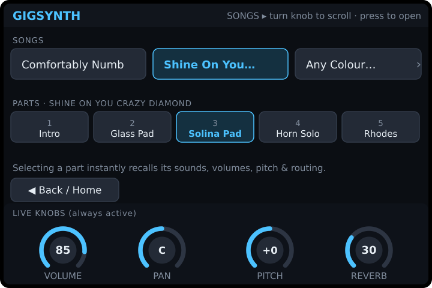
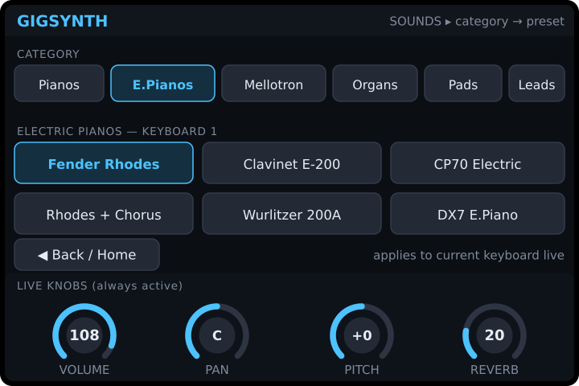
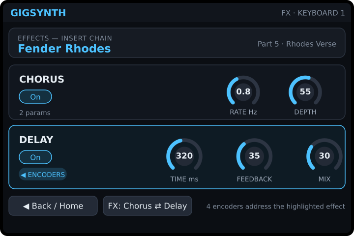

On a Pi Zero 2 W the full three-view desktop UI is too heavy and the
screen is tiny. GigSynth ships a dedicated kiosk mode
(gigsynth -mode pizero) built for a small LCD (≈480×320). It runs with a
single 61-key MIDI controller, shows two rows of menus and up to four
live knobs, and lets the player walk a song's parts hands-free from the keyboard.
Design principles
- One thing per screen. Tiny display, stage lighting, no mouse — every screen shows one decision and the four knobs.
- Knobs are always live. The bottom strip (Volume / Pan / Pitch / Reverb) never goes away, so you can tweak the sound no matter which menu you're in.
- Two menu rows, no deep trees. Row 1 = where you are (categories / songs), Row 2 = what's inside it (presets / parts). Turn an encoder to scroll a row, press to select.
- The 61-key controller is the main remote. You should be able to change parts mid-song without touching the screen.
The screens





Navigation flow
Everything radiates from Home. Two taps (or two encoder presses) reaches any screen, and the knobs stay live throughout.
Driving it from the 61-key controller
The point of Pi Zero mode is hands-on-keys operation. A small block of the controller's keys (or its transport / program buttons, depending on the model's mapping) is reserved for navigation so the player never reaches for the screen mid-song:
| Controller input | Action | Notes |
|---|---|---|
| Program − / Program + buttons | Previous / Next Part | The core live move — walks the current song's parts in order. |
| Bank − / Bank + (or hold + Prog) | Previous / Next Song | Jump between songs between numbers. |
| Assignable knob 1–4 | Volume · Pan · Pitch · Reverb | The four on-screen knobs mirror these CCs in real time. |
| Sustain pedal | Sustain (CC64) | Passed through to the active sound. |
| On-screen ▲▼ / ◀▶ | Same as above | Touch fallback when a controller lacks transport buttons. |
Knob behaviour
- Volume — CC7 for the active keyboard's sound (0–127).
- Pan — CC10, centre-detented (L ↔ C ↔ R).
- Pitch — transpose in semitones (±), applied to routed notes; All-Notes-Off fires on change so nothing sticks.
- Reverb — send level for the current sound, for quick room/ballad adjustments.
On the FX page the same four encoders are re-tasked to the effect inserts. Because Chorus (2) + Delay (3) is five parameters but the hardware has four knobs, the page highlights one effect at a time — the four encoders address it, and FX flips between Chorus and Delay. Bigger screens don't need this: the 7″ Pi 5 layout shows all five knobs at once, and the desktop shows every keyboard's racks together.
Edits made with the knobs are part of the live state; Setup → Save Part writes them back so the next recall remembers them.